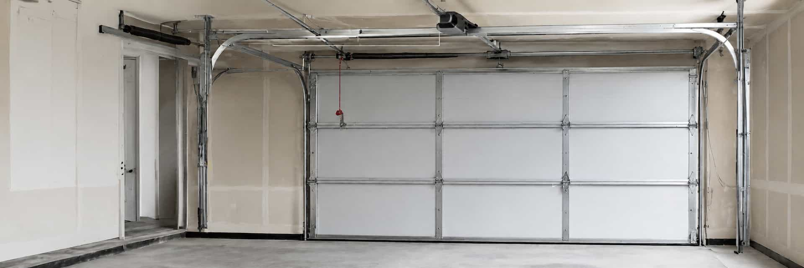

Broken spring
Compare providers who may handle this type of request.
GARVOX helps homeowners explore provider options for repair-related garage door requests. Availability, timing, and project details must be confirmed directly with providers.
Repair-related requests can vary widely. Use these issue types to compare provider familiarity, parts, response windows, and quote details.
Compare providers who may handle this type of request.
Compare providers who may handle this type of request.
Compare providers who may handle this type of request.
Compare providers who may handle this type of request.
Compare providers who may handle this type of request.
Compare providers who may handle this type of request.
Homeowners should verify issue type, provider availability, diagnostic approach, quote scope, parts, warranty, and service area directly with providers.
Describe whether the request involves springs, tracks, rollers, panels, opener, sensor, or noise issues.
Same-day or urgent requests may vary by provider, ZIP code, issue type, and schedule.
Ask which parts may be needed and whether availability affects timing or quote scope.
Confirm service area, scheduling options, and expected communication directly with the provider.
Ask whether diagnostics, parts, labor, additional fees, or follow-up work are itemized.
Review any repair-related warranty details directly before agreeing to provider work.
Different door systems can involve different tracks, panels, openers, rollers, sensors, and hardware considerations.

Sectional doors are common in residential settings. Compare providers familiar with material, insulation, panel style, track condition, opener fit, and warranty questions.

Tracks Springs Opener PanelsRepair-related comparisons can involve more than one component. Ask providers how the visible issue, garage door type, hardware condition, and opener compatibility affect scope and timing.
Spring-related requests should be discussed carefully with qualified providers.
Track alignment or damage can affect door movement and repair scope.
Roller type and condition may affect noise and movement quality.
Safety sensor setup and opener behavior should be verified directly.
These answers keep the provider-matching model clear and help homeowners verify important repair details directly.